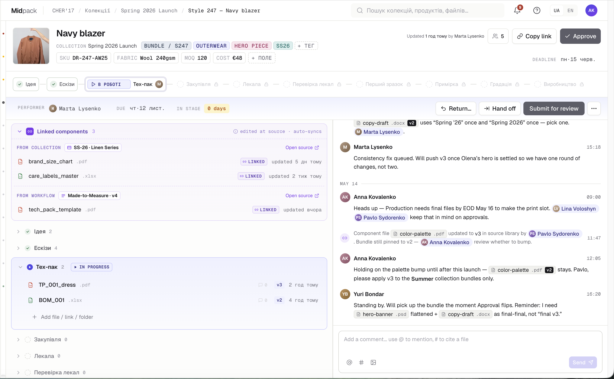
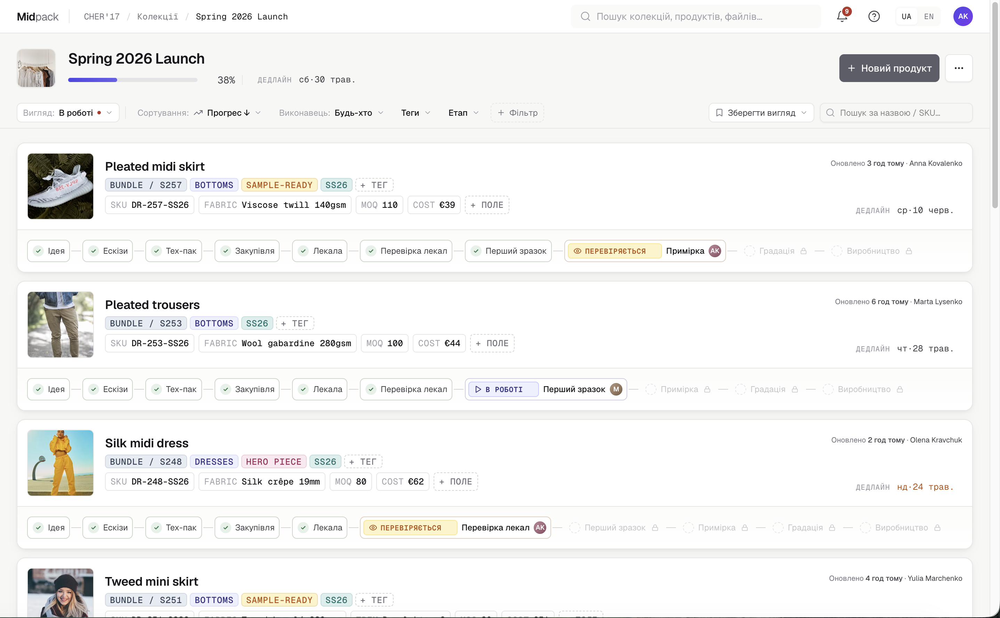
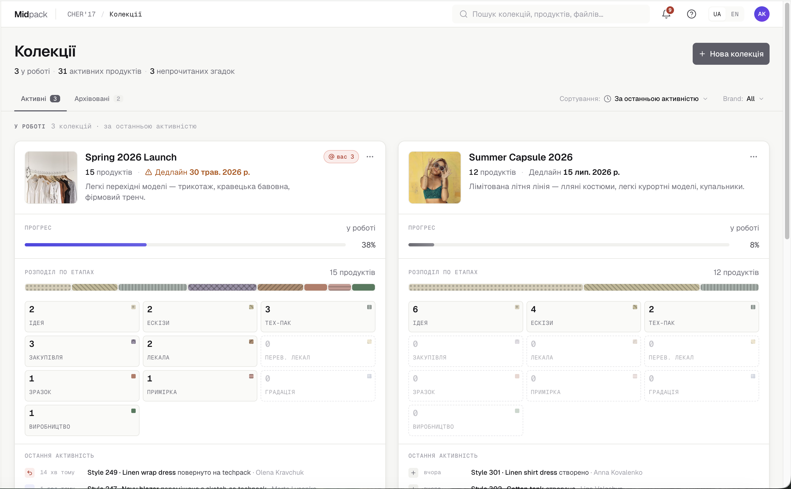

Кожен виріб — від ескізу до фіналу — в одному місці.
Midpack — це інструмент, у якому кожен продукт є набором файлів, що рухається через налаштовувані стадії з одним відповідальним на кожній. Уся розробка — файли, версії, рішення, обговорення і статус — живе в одному місці.
Зміст
Проблема
Команда, що створює колекцію, тримає правду про продукт у п'яти різних місцях. Що більша команда й складніша колекція — то вищий прихований рахунок за це.
Дизайнери, технологи, конструктори, закупівлі, виробництво — кожен тримає шматок правди в Google Drive, багатовкладкових таблицях, WhatsApp із фабрикою, Telegram із дизайнером і кількох Google Docs. Джерело правди фрагментоване по 5+ інструментах, жоден з яких не знає про стадію, версію чи апрув.
Робота — це не «зробити тех-пак», а ланцюг: ескіз стає тех-паком → примірка породжує коментарі → тех-пак оновлюється → кроїться наступний зразок. Кожна стадія дає вхід для наступної — і саме на швах між інструментами правда розповзається.
Зайві раунди зразків
− зразокФабрика кроїть не ту версію → перешив, витрачена тканина й час фабрики. Кожен зайвий раунд — прямі гроші на вітер.
Зрив вікна сезону
− сезонРішення «зависають» між людьми → колекція спізнюється в магазин → знижки на залишки або недопродана партія.
Переробки через втрачені деталі
− партіяУсно узгоджене зникає (сукня без паска) → переробляти готову партію або продавати дешевше.
Дорогий час команди
− годиниТехнологи, конструктори, керівники щодня витрачають години на «де / яка версія?» замість роботи, за яку їм платять.
Що таке Midpack
Midpack робить продукт і його файли центральним об'єктом. Вся правда про виріб збирається в одне місце, з яким працюють потрібні люди.
Коли команда веде продукт від першого ескізу до фіналу, кожен файл, коментар, рішення і апрув живуть в одному місці — щоб нічого не губилось між кроками, а справжній статус було видно з одного погляду.
Набір файлів
Кожен продукт — це набір різнорідних файлів: ескізи, тех-паки, фото зразків, лаб-діпи, специфікації. Кожен файл має власний ланцюжок версій, а продукт цілком рухається через стадії.
Обговорення на місці
Коментарі прив'язані до продукту й живуть в одній стрічці, тож контекст не губиться між ітераціями. За потреби коментар посилається на конкретну версію файлу через inline-тег.
Історія як таймлайн
Переходи між стадіями контрольовані й залоговані. Уся історія продукту читається як один таймлайн — нову людину можна онбордити без серії мітингів.
Єдине джерело правди
Файли, коментарі, аудит-лог і документація лишаються в Midpack — від першого ескізу й у наступний сезон. Бренд може будь-коли експортувати все у власне сховище, без lock-in.

Сезон з Midpack
Сезон у Midpack — це одна або декілька колекцій: усі вироби зібрані в один список. Кожен продукт — окремий об'єкт зі своєю стадією, виконавцем і дедлайном, тож всю колекцію видно з одного екрана.

Етапи, виконавці і файли
Етап — це крок із назвою, призначеним виконавцем, файлами і контрольованим переходом. Один відповідальний на кожній.
Один виконавець
На кожній стадії — рівно одна людина, з якої спитати. Видно, хто зараз тримає продукт і кому він піде далі.
Gated-перехід
Продукт переходить далі однією дією: передати, відправити на рев'ю або повернути. Наступний не чекає на повідомлення в чаті.
Залогована історія
Кожен перехід фіксується: хто, що, коли. Історія читається як один таймлайн, а не реконструюється по чатах.
Наскрізний прохід одного виробу реальними етапами. Кожен крок дає вхід наступному — і лишає слід на продукті.
Ідея
Дизайнер кладе мудборд і бриф колекції як робочу версію. Продукт народжується.
Матеріали
Закупівлі підтверджують тканину й фурнітуру; технолог фіксує нотатки по матеріалах просто на продукті.
Тех-пак
Технолог рахує під останній затверджений ескіз і здає тех-пак однією дією.
Лекала
Конструктор працює з чистих вхідних — паралельно із закупівлями тканини.
Зразок
Фабрика кроїть зразок із правильної версії тех-пака. Фото зразка повертаються на продукт.
Примірка
Рішення з примірки фіксуються прямо там, де ухвалені — а не реконструюються в понеділок із 60 фото.
Виробництво
Керівник виробництва бачить, що повернулось від підрядника: план проти отриманого.
Готово
Уся історія — файли, версії, рішення — лишається в Midpack.
Workflows
Налаштовуваний workflow — ядро продукту. Команда збирає будь-який процес розробки як конструктор: послідовність стадій (перетягуванням), паралельні гілки та прикріплені до стадій компоненти й темплейти. Workflow'ів може бути кілька — під різні типи процесу розробки; при створенні продукту обираєш, за яким він піде.
Готові шаблони з коробки
Щоб новий бренд стартував за хвилини, а не з порожнього екрана, Midpack постачає 2–3 преднабудовані шаблони. Шаблон вмикається одним кліком — і одразу працює, або береться за основу й допасовується. Це стартова точка, не обмеження: усе в них редаговане.
- Базовий одяговий потік — Ідея → Матеріали → Тех-пак → Лекала → Зразок → Примірка → Виробництво.
- Коротший потік для принтів / колаб на наявній базі.
- Узагальнений — бриф → робота → рев'ю → готово.
Не одяг?
Жодного зашитого «правильного» процесу. Ювелірка, одяг, взуття, кераміка чи зовсім інша сфера описуються тим самим механізмом — лише іншими стадіями.
Змінює нові продукти. Для продуктів «в роботі» новий крок додається й дозаповнюється вручну — без мовчазного перерахунку історії.
Файли: види і повторне використання
Будь-який файл — рівноправний член продукту. У Midpack «файл» з'являється трьома шляхами, і всі три є частиною продукту. Кожен має версіонування, а обговорення в коментарях привʼязані до певної версії. Файли і посилання додаються виконавцями на своїх етапах.
Перетягни що завгодно — .xlsx, .ai, .pdf, .png, .zip. Формат не обмежений. Кожне нове завантаження лягає новою версією поверх старої: історія зберігається, видно хто і коли оновив, можна відкотитись. Файл фізично живе в Midpack.
Не треба зовнішнього редактора — два легких типи народжуються прямо тут і так само версіонуються:
- Нотатка ·
.md— простий документ для коротких рішень, інструкцій, нотаток із примірки. - Проста таблиця — рядки/стовпці без формул, коли потрібно щось структуроване, а повноцінний Excel — надлишок.
Дані лежать деінде — Figma, Google Doc, Techpacker. У продукт додається не копія, а жива URL-адреса. Midpack не зберігає й не версіонує сам файл: джерело оновлюється у себе, а посилання завжди веде на актуальну версію. Приймається нарівні із завантаженими.
Компоненти і темплейти
Обидва — спосіб повторно використовувати файли, але по-різному. Та сама .pdf може існувати як компонент або теплейт
Компонент
сітка
Темплейт
форма
Успадкування на старті продукту
Компоненти й темплейти прикріплюються до колекції, до воркфлову та до окремих етапів. Коли продукт запускається, він автоматично збирає потрібні файли саме туди, де вони мають бути — нова картка вже не порожня.
Чого хочуть учасники процесу?
«Коли власниця питає „а де зараз модель 247?", я хочу відповісти за пів хвилини, а не писати чотирьом людям і збирати відповідь пів дня.»
«Коли черга доходить до мене, я хочу одразу бачити останній затверджений ескіз і всі нотатки в одному місці — щоб рахувати по актуальній версії, а не по тій, що була минулого тижня.»
«Дайте мені правильні, затверджені файли — я зроблю свою частину, зафіксую результат і передам далі, без зайвих нарад.»
«Коли бренд шле мені продукт, я хочу відкрити його на телефоні й коментувати, без акаунта — і щоб фідбек приземлявся назад на продукт.»
«Коли я сиджу на двотижневій нараді, я хочу пройтись по кожному продукту й побачити його стадію та ризики, щоб планування було поглядом, а не зустріччю, наповненою фраз «я перевірю».

Відгуки до яких прагне Midpack
Продукт ще не запущено. Нижче — бажані відгуки за ролями: який результат Midpack має давати кожному. Це ціль, а не реальні рецензії.
Раніше «де style 247?» означало написати чотирьом людям і втратити півдня. Тепер я відкриваю продукт і бачу: дизайнер здав, технолог порахував, чекає на конструктора. П'ять секунд.
Я заходжу зранку і одразу бачу, що саме на мені і що в пріоритеті. Не треба нічого шукати по чатах — остання затверджена версія, специфікація, чого від мене чекає конструктор: усе в одному місці.
Нарешті я бачу весь процес розробки як на долоні — на якій стадії кожен виріб, що гальмує, чи встигаємо в сезон. І найголовніше — я бачу що робота по колекції рухається швидше.
Мені не треба ніякого акаунта. Бренд кинув посилання у WhatsApp, я ввів код, подивився тех-пак з телефона і там же написав, що по тканині не так. Воно одразу пішло до них назад.
Найбільше підкупило, що почати було легко — жодних місяців впровадження й тренінгів, сіли й одразу працюємо. До того ж не довелося заганяти в систему всю компанію: користуються лише ті, кому це справді треба, а решта живе як жила. Саме тому воно прижилося — на відміну від складних у впровадженні PLM-систем.
Робота з підрядниками
Зовнішніх учасників залучають двома безкоштовними способами — і коментарі з обох повертається на продукт.
Пакет для перегляду
Версіонований набір файлів за посиланням із pin-кодом. Без реєстрації, відкривається з браузера й телефона. Для епізодичних рев'юерів — фабрики, разового підрядника.
Постійний scoped-доступ
Для регулярних партнерів — постійний доступ із stage-level правами перегляду.
Коментарі з обох режимів приземляються назад на продукт бренду. Більше не треба переобговорювати через WhatsApp-треди — обговорення з підрядниками відбувається там же де і відбувається розробка моделей.
Style 247 · Navy blazer
Введіть pin-код із повідомлення,
щоб відкрити файли
Єдине джерело правди
Продукт і його історія живуть у Midpack як система запису. Канонічний дім — Midpack; чистий експорт у власне сховище доступний будь-коли, без lock-in.
Аудит-лог
Хто, що, коли — по кожному продукту. Історія читається як один таймлайн.
Постійне сховище
Продукт живе в Midpack від першого ескізу й у наступний сезон, а не лише на час однієї задачі.
Початок роботи
Без складного налаштування. Майже нульове навчання.
Зареєструйтесь через Google
Без дзвінка з продажником і без кредитної картки.
Створіть перший продукт і оберіть шаблон етапності
Додайте перші файли — картка вже збере потрібні компоненти й заготовки.
Запросіть команду
Працюють ті 5–6 людей, кому це треба, — не вся компанія.
Працюйте
Завантажуйте файли, коментуйте, виконуйте стадії, слідкуйте за прогресом прозоро.
Цільові показники
Як виглядає успіх з позиції клієнта — у цілях, а не у функціях.

Чим Midpack НЕ є
Межі найлегше зрозуміти неправильно — тому вони проговорені прямо. Наскрізно: workflow-інструмент або швидкий і легкий PLM.
Midpack моделює роботу як вона є — набір файлів через стадії. Він не класичний PLM (не моделює бізнес-сутності Style/BOM/POM), не ERP (не веде собівартість і прогноз матеріалів), не таск-трекер в класичному розумінні і не інструмент для моделювання.
Скоуп
- Продукт = набір файлів через стадії
- Один виконавець на стадію, gated-перехід
- Коментарі на продукті + inline-теги
- Компоненти (лінк) і темплейти (копія)
- Пакет для перегляду за pin-кодом
- Worklist, аудит-лог, експорт без lock-in
- Вбудовані Style / BOM / POM
- Cost rollups, прогноз матеріалів (ERP-територія)
- Контроль підрядників через систему
- Затягування всієї компанії в систему
- Таск трекер для партійного виробництва
Спектр структурованих даних
Кількості, BOM, собівартість — не вбудовані сутності. Команда веде їх як файл у продукті. Легке зручно вести просто в Midpack; важке лишається у власному інструменті як завантажений файл або посилання.
Чому наявні альтернативи не закривають задачу
- Без вбудованих структурованих сутностей — натомість простота, гнучкість досягається файлами, нототками і таблицями + відсутність lock-in.
- Бінарні формати (AI, CLO) → кожна версія = export + upload; для shareable-URL (Figma, Google Doc) лінк оновлюється in-place.